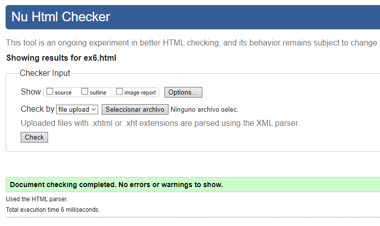

Llista Definicions
- HTTPS
- Es un protocolo de comunicación utilizado para la transmisión de información en la World Wide Web. HTTP define cómo se envían y reciben los mensajes entre navegadores web y servidores web.
- HTML
- Es un lenguaje de marcado utilizado para la creación y estructuración de contenido en la web. Permite la creación de páginas web mediante el uso de etiquetas que definen la presentación y organización del contenido.
- URL
- Es una dirección que se utiliza para identificar de manera única un recurso en la web. Las URL incluyen información sobre el protocolo de comunicación a utilizar (como HTTP o HTTPS), el dominio, la ruta y, opcionalmente, parámetros específicos.
- TCP/IP
- Es un conjunto de protocolos de comunicación que se utiliza para la transmisión de datos en redes de computadoras. TCP controla la división y reensamblaje de los mensajes, mientras que IP maneja la dirección y el enrutamiento de los datos a través de la red.
- INTERNET
- Es una red global de redes interconectadas que utilizan el conjunto de protocolos TCP/IP para la transmisión de datos. Permite la comunicación y el intercambio de información a nivel mundial.
- W3C
- Es una organización internacional que desarrolla estándares para la World Wide Web, con el objetivo de asegurar la interoperabilidad y el crecimiento a largo plazo de la web. Establece pautas como las especificaciones HTML y CSS.
- MOZILLA FOUNDATION
- Es una organización sin fines de lucro que impulsa el desarrollo del software de código abierto, incluyendo el navegador web Firefox. La fundación tiene como objetivo promover un internet abierto y accesible para todos.
Anar a la pagina principal
